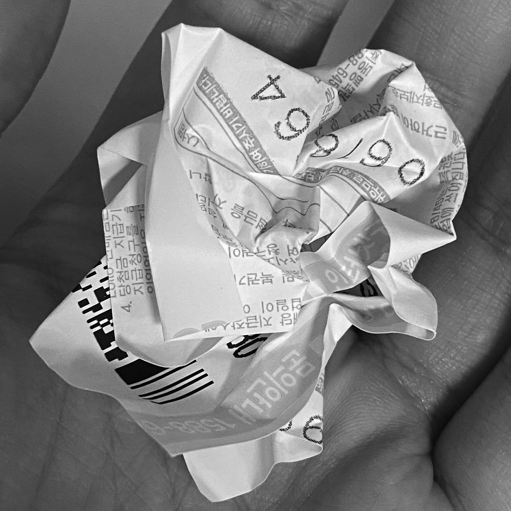

3년간 경북예고에서 미대 입시를 준비함.
- 홍익대학교 디자인학부 합격
닫기
고등학생 때부터 하루에 할 일을 정리해왔음. 낙서도 많음)
- 다수의 수첩들이 있음.
- 대학생이 되어서도 메모를 만만치 않게 써온 것이 확인됨.
- (갓생에 집착하는 것 같기도...)
꿈 일기를 자주 씀. 심심할 때 읽으면 재밌어서 쓰는듯.
- 근데 공개하면 큰일남
데이식스를 정말 좋아함. 햇수로 6년째.
요즘은 엔시티 드림도 좋아함..
취향이 소나무임. 원필 / 제노)
어릴 때부터 미니어쳐 만드는 것을 좋아했음. 휴학 때 미니어쳐 유튜브도 잠깐 했음.
중국어 공부를 잠깐 했었음. 새로운 언어 배우는 것을 좋아하는 편.
컴퓨터 언어도 배우는 중.
미술사를 좋아해서 매학기 관련 수업을 들음.
어릴 때부터 게임을 엄청 많이 했음. 가장 최근 한 게임은 스타듀밸리.
아카이빙하는 것을 좋아함.
- 고3 때 아침 7시 반 등교 인증샷이 아직 있음.
- 로또(꽝) 사진을 다 모아둠.
- 애플워치를 산 이후로 심박수가 높이 올라갈 때마다 캡쳐해둠.
닫기